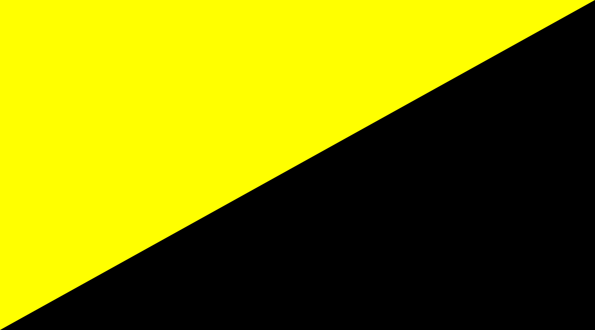

¿Qué es el AnarcoCapitalismo
El anarcocapitalismo, voluntarismo, anarquismo de propiedad privada o libertarismo (entre otros nombres) es una filosofía moral que plantea un marco jurídico, que postula que todas las personas son dueñas de su propio cuerpo (nadie puede usarlos para algo sin consentimiento) y también son dueñas de lo que, con el propio trabajo de su cuerpo, produzcan o cosechen. Por ejemplo, si se construye una cabaña o si se recolectan manzanas. De esto se sigue que, cuando algo ya es propiedad de alguien, la única manera legítima que tienen las demás personas de obtener ese algo es mediante el intercambio o acuerdo voluntario con el actual propietario.
